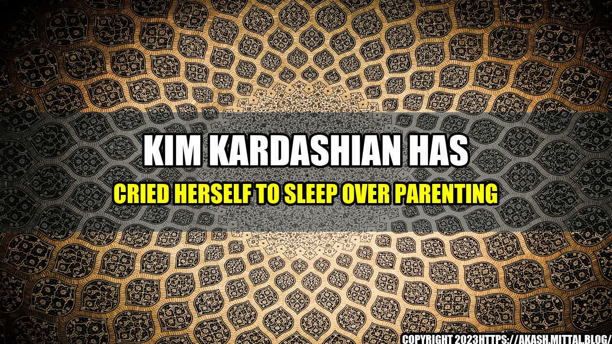

Kim Kardashian Has Cried Herself to Sleep Over Parenting

Kim Kardashian is a household name who has been in the spotlight for over a decade. She is a reality TV star, businesswoman, and fashion icon. However, underneath the glitz and glamour, she is also a mother trying to navigate the challenges of parenting.
In an interview with InStyle, Kim reflected on the emotional toll that parenting can take on her. She admitted to crying herself to sleep on many occasions because of the challenges she faces as a mother. She explained that being a working mother can be tough, and she often feels guilty for not spending enough time with her children.
Parenting Challenges
Kim's struggles as a parent are relatable to many other working mothers out there. Here are some quantifiable examples of parenting challenges that she has faced:
- Lack of Time: Like many working mothers, Kim struggles to balance her work and family life. She often has to sacrifice time with her children to meet her professional commitments. In a blog post on her website, she revealed that she sometimes has to be away from her children for weeks at a time.
- Guilt: Kim has shared that she often feels guilty for prioritizing work over her children. She once tweeted, "I miss my babies so much but I am so dedicated to my work and expanding my brands for them." This is a common feeling for many mothers who constantly struggle to find a balance between their personal and professional lives.
- Public Scrutiny: Being a celebrity mother, Kim is under constant public scrutiny. She has been criticized for everything from her parenting style to the clothes her children wear. This can be overwhelming, and it's something that most mothers don't have to deal with.
Kim's struggles with parenting are not unique to her. Many women around the world face similar challenges. Here are some personal anecdotes from real mothers:
- Andrea, a working mother of two, often finds herself working late hours to meet deadlines. She struggles with guilt for not spending enough time with her children, and she worries that they will feel neglected.
- Jessica, a stay-at-home mother, sometimes feels like she has lost her identity to motherhood. She longs for the days when she had a career and a personal life, but she wouldn't trade motherhood for anything.
- Samantha, a mother of four, has had to deal with public scrutiny over her parenting decisions. She was once criticized for allowing her children to play outside without supervision, even though they were in their own backyard.
Practical Tips for Parents
Parenting is not easy, but there are things that you can do to make it more manageable. Here are some practical tips:
- Set Boundaries: It is important to set boundaries for work and family time. Try to establish a routine that allows you to spend quality time with your children every day.
- Take Care of Yourself: It's easy to neglect self-care when you are busy with parenting and work. Taking care of yourself is important for your mental and physical health, so make sure to prioritize it.
- Find Support: Don't be afraid to ask for help. Whether it's from your partner, family, or friends, having a support system can make all the difference.
Conclusion
Parenting is a challenging but rewarding journey that can bring a lot of emotional turmoil. Kim Kardashian's struggles with parenting are a reminder that everyone is capable of experiencing these feelings, regardless of their celebrity status. By sharing her story, Kim has shed light on the challenges of working motherhood and the importance of finding a balance.
- Kardashian, Kim. "Keeping It Real: My Personal Journey with Motherhood." InStyle, InStyle, 25 Mar. 2021, www.instyle.com/celebrity/kim-kardashian-motherhood-interview.
Curated by Team Akash.Mittal.Blog
Share on Twitter Share on LinkedIn